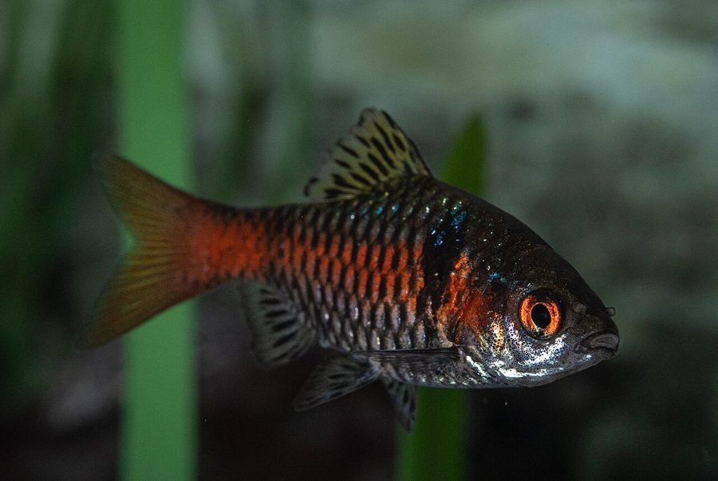

टिकटोTicto Barb
Pethia ticto · Cyprinidae · FSH-0026

- Scientific name
- Pethia ticto (Hamilton, 1822)
- Family
- Cyprinidae
- Hindi
- टिकटो
- Local names
- tikto, ticto, pothi, puthi, tikti
- Status here
- native
- IUCN
- LC
- Review
- audited and independently read
When to look कब देखें
Present all year.
Uses and possibilities उपयोग और संभावनाएँ
Drawn from the documented uses in the profile below, where each is labelled traditional, current or a research lead. All uses →
टिकटो / Ticto Barb
Pethia ticto (Hamilton, 1822) — Cyprinidae
टिकटो — छोटी देसी मछली, तालाब और नहर में। शरीर पर धब्बे, पीली पंखें। साधारण आदमी की मछली, तरकारी के साथ पकाई जाती है, स्वाद अच्छा। अंडे रखी जाती हैं घास पर। झुंड में रहती है। छोटी होती है, दो-तीन काँटे।
Quick Identification त्वरित पहचान
| Feature | Description |
|---|---|
| Size | 4–6 cm |
| Body | Moderately compressed, stocky; slightly arched back |
| Spots | Dark spots along lateral line and on flanks; spot patterns diagnostic |
| Fins | Dorsal fin with 12–14 rays; pectoral and pelvic fins reddish or yellowish |
| Tail | Slightly lobed, forked |
| Colour | Silvery-olive above, lighter below; breeding males darker with more prominent spots |
Field tip: A small, spotted barb found in shallow water. Often caught in hand-nets or small traps. The dark spots along the lateral line are distinctive. Edible and eaten locally.
हिंदी: तालाब की छोटी, धब्बेदार मछली, जाल में आसानी से पकड़ी जाती है।
Morphology आकारिकी
Biometrics (field populations):
| Measurement | Range |
|---|---|
| Standard length | 4–6 cm, occasionally to 8 cm |
| Weight | 2–4 g |
| Dorsal fin rays | 12–14 |
| Anal fin rays | 10–11 |
| Sexual maturity | 1 year |
| Fecundity | 200–500 eggs per female |
Head and mouth: Head small and rounded; mouth small, slightly inferior, adapted for browsing on algae and detritus.
Body: Moderately compressed and stocky; lateral line complete and marked with a series of dark spots extending from gill cover to tail base. This spot pattern is diagnostic of the species.
Fins: Dorsal fin positioned above the pelvic fins, with 12–14 rays. Anal fin with 10–11 rays. Pectoral and pelvic fins often reddish or yellowish. Tail fin slightly lobed and emarginate.
हिंदी: सिर गोल, मुँह नीचे, छोटा। शरीर गहरा, सपाट। धब्बे पूरी लाइन में। पंख पीले-लाल।
Behaviour & Ecology व्यवहार और पारिस्थितिकता
A gregarious small fish of shallow, slow-moving waters, rice fields and ponds. Forms schools in shallow margins and among vegetation. Feeds on algae, fallen leaves, plant material and small invertebrates; the bottom-feeding habit is typical for the genus. Tolerates poor water quality better than many fish. In flooded rice paddies during monsoon it is abundant and easy to catch. Not aggressive towards other species; often found schooling with other small cyprinids.
Life Cycle / Phenology जीवन चक्र
| Stage / season | Event |
|---|---|
| March–May | Growth continues; water cools; fish move to deeper water |
| June–August | Breeding; water level rises; eggs laid on vegetation |
| Eggs | Adhesive, laid on plants; hatch in 2–3 days |
| Fry, 3–4 weeks | Feed on copepod nauplii and plant material; rapid growth |
| Sexual maturity | Reach 4–5 cm (1 year) in optimal conditions |
| September–February | Growth slows in cool water; concentration in deeper refuge pools |
हिंदी: बरसात में प्रजनन; अंडे घास पर; 2-3 दिन में निकलते हैं; 3-4 हफ़्ते में बड़े होते हैं; एक साल में बालिग़।
Host Plants or Prey आहार
- Algae and diatom films on submerged surfaces
- Fallen leaves and plant detritus
- Small organic particles and organic ooze
- Small crustaceans (ostracods, copepods)
- Insect larvae when available
Predators / Natural Enemies शत्रु
- Birds: Indian Pond Heron, Little Egret, White-throated Kingfisher
- Fish: Stinging Catfish, larger barbs and cyprinids, dragonfly nymphs (on fry)
- People: Hand-netted from ponds and rice fields; the main catch for subsistence food
Agricultural / Human Relevance कृषि प्रासंगिकता
Food. A valued food fish for rural communities, particularly in eastern UP. Caught in small quantities from ponds and rice fields using hand-nets and small traps, and sold at local markets. The flesh is soft and the bones are fine; the entire small fish is eaten. Protein-rich for subsistence diet. Often dried and preserved for year-round storage. Composite fish culture includes Pethia ticto as a minor species, often alongside rohu and catla in larger ponds.
Today. Abundant in monsoon; less available in dry season.
Research direction (a lead, not a result). The life history parameters (growth rate, fecundity, age-at-maturity) have not been quantified locally. A mark-recapture study or scale-reading of fish from village ponds would establish baseline data for this species.
हिंदी: साधारण गाँव वाली मछली, जाल से पकड़ी जाती है, बाज़ार में बिकती है, अच्छी खाई जाती है। छोटी होने से सब गलियाँ हो जाती हैं।
Expected Locally स्थानीय रूप से अपेक्षित
Not a field record. Written from published accounts for eastern Uttar Pradesh. No confirmed local sighting yet — if you have seen it, that is what the atlas needs.
अभी तक स्थानीय पुष्टि नहीं। यह विवरण प्रकाशित स्रोतों से है, किसी अवलोकन से नहीं।
To be expected in shallow ponds, rice fields and slow-moving canals throughout the district, particularly during and after the monsoon when water levels rise. A net catch or a photograph is a confirmed record.
Distribution वितरण
Global range: South and Southeast Asia; native to the Indo-Gangetic region.
In India: Throughout the Gangetic plain and peninsular India; a common fish in rice-growing regions.
In Uttar Pradesh: Common throughout the northern and eastern plains.
In Basti district / eastern UP: Common in shallow water bodies and rice fields; particularly abundant during monsoon.
Research Questions शोध प्रश्न
Anyone can investigate these | कोई भी इन प्रश्नों की जाँच कर सकता है
- How many ticto can be caught in one hand-net haul in July, and how does this vary by pond? — Net several ponds; count and measure.
- Do the spot patterns on individual fish remain constant for identification? — Photograph individuals and recapture them.
- What is eaten (stomach content analysis) in monsoon vs. dry season? — Dissect fish captured in different seasons.
- How many eggs does a single female produce, and how many survive to fry? — Capture spawning females and observe.
- Is there any market trade in dried ticto, and what is the annual catch value? — Interview vendors and fishers.
Similar Species मिलती-जुलती प्रजातियाँ
| Species | How to tell apart | हिंदी |
|---|---|---|
| Rohu (Labeo rohita) | Much larger (20–60 cm); head bigger; mouth terminal and large | बहुत बड़ी, बड़ा मुँह |
| Mola Carplet (Amblypharyngodon mola) | Smaller (5–10 cm); deep-bodied; no spots; deeper body colour | गहरा शरीर, धब्बे नहीं |
| Other Pethia spp. | Vary in spot patterns and size; sympatric range confusion possible | धब्बों के पैटर्न अलग |
Field rule: A small, moderately compressed barb with dark spots along the lateral line, yellowish fins, and occurring in schooling behaviour in shallow water is a ticto barb.
Taxonomy & Classification वर्गीकरण
Original description. Described by Francis Hamilton in 1822 in An Account of the Fishes Found in the River Ganges and Its Branches, p. 326, from the Ganges and Bengali rivers. Originally placed in Cyprinus; transferred to Pethia by early 20th-century taxonomists.
Subspecies. Monotypic — no subspecies are recognised.
Family and order placement. Cyprinidae, the carp family; order Cypriniformes. The genus Pethia contains approximately 40 species distributed across Asia.
Phylogenetic notes. Pethia is nested within the Cyprinidae; its relationship to other small Asian barbs is well-supported by molecular data.
IUCN status rationale. Least Concern. Widespread, abundant in suitable habitats, and stable in range.
Photo Gallery फोटो गैलरी
Photos needed आवश्यक फोटो
- [ ] School in rice field margin (धान के खेत के किनारे झुंड)
- [ ] Close-up showing spot pattern (धब्बों की पैटर्न)
- [ ] Breeding male (गहरे रंग का नर)
- [ ] Nets and catch (जाल से पकड़ी गई मछली)
No photos yet — add field photos to media/species/ticto_barb/ and run node scripts/sync_photos.js.
References संदर्भ
- Hamilton, F. (1822). An Account of the Fishes Found in the River Ganges and Its Branches, p. 326. Edinburgh University Press.
- Day, F. (1878). The Fishes of India, vol. 1. Williams and Norgate, London.
- Hora, S.L. & Pillay, T.V.R. (1962). Handbook of fish culture in the Indo-Pacific region. FAO Fisheries Biology Technical Paper no. 14.
- Talwar, P.K. & Jhingran, A.G. (1991). Inland Fishes of India and Adjacent Countries, vol. 1. Balkema, Rotterdam.
- Chakraborty, S.K. & Silas, E.G. (1992). Biology and fishery of the major carp species of the Ganges and their nurseries. In: Fish Culture in Farmland Aquaculture. Springer, Dordrecht.
- GBIF Occurrence Data — Pethia ticto, India (2026).
Source file: species/fauna/fish/ticto_barb.md